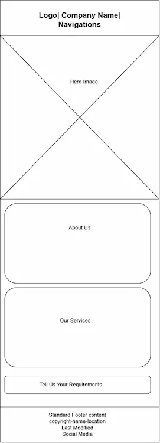
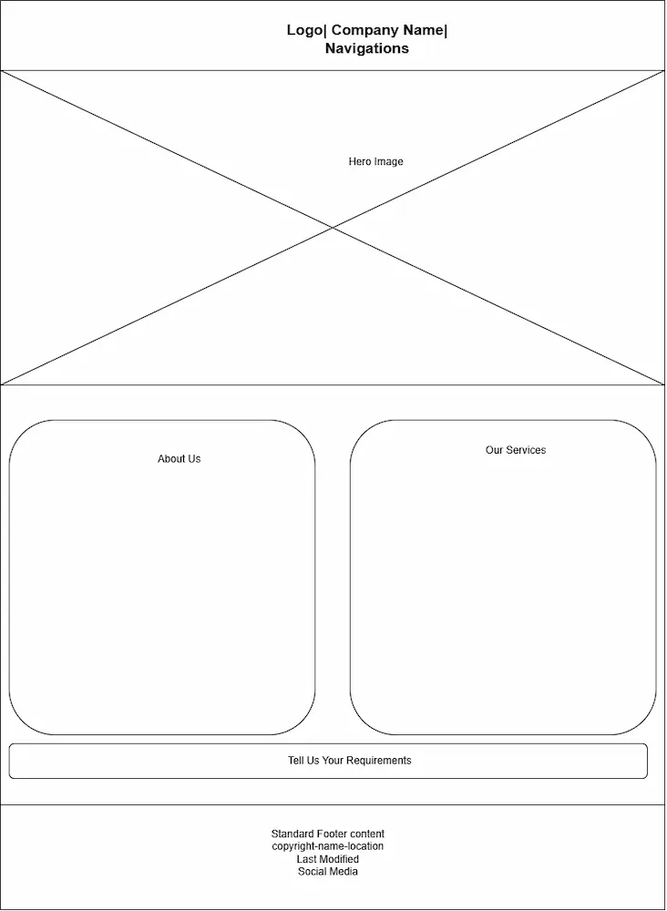

Site Name
Name: Kaevikon Construction and Professional Services Profile
This name is choosen to reperesent the comprehensive services that is offered by the company in the building and construction industry in Nigeria.
Damain Availability: kaevikon-const_professional.org
Site Purpose
This project will serve as my professional profile and will provide a platform to showcase all the software I will develop during my studies at BYU in one place. Additionally, I will use the site to advertise my products and services in the future.
Scenarios
• Are there discounts for services and products of the company?
• Where and when can I inspect your equipment yard and portfolio projects, for confirmation?
Color Schema
• Carbon Black (191f24): Black is usually associated with luxury items or elegance. It will be used on the background for the header and footer.
• Dust Grey (d9d4d5): Grey is associated with technology, industry, precision, control, competence, and sophistication. It will be used as the background for the main page.
• #282525: This shade of black has a better contrast with grey. It will be applied on the header and footer font color.
• #e4d8d8: This shade of white has a better contrast with black. It will be applied on the header and footer font color.
Typography
• "Marcellus", serif: This will be used in the header and the footer.
• "News Cycle", sans-serif: This will be used in the body.
Wireframe

